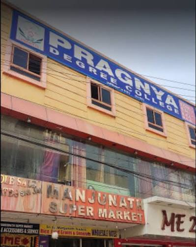
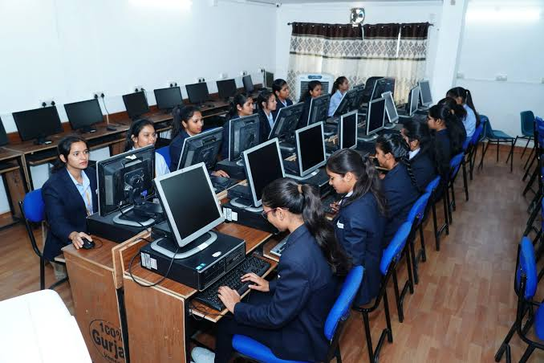

About Our College
Welcome to Pragnya Degree College
Empowering Students Through Knowledge, Skills, and Excellence
Pragnya Degree College, located in Chandanagar, Hyderabad, is dedicated to providing students with a meaningful and enriching educational experience.
We believe that education is not just about academic learning but also about developing confidence, critical thinking, creativity, and essential life skills.
Our vision is to create a positive and supportive learning environment where students can explore their potential, discover their talents, and prepare themselves for future opportunities.
At Pragnya Degree College, we believe every student has the ability to achieve great things.
Through education, guidance, and continuous learning, we aim to inspire students to become knowledgeable, responsible, and successful individuals.
Pragnya Degree College – Building Knowledge, Inspiring Futures.



History of pragnya degree college
PRAGNYA GROUP OF COLLEGES were established with the prime motto of extending quality education with affordability to the common students. Furthermore, with an immense experience in the educational field, our committed board of directors, dedicated staff, and the team have set the advanced methodologies Well-experienced faculty with advanced teaching methodologies. High-end infrastructure with well-equipped classrooms, labs, library, etc. Multiple skill development, training, and placements programs to make you job-ready.